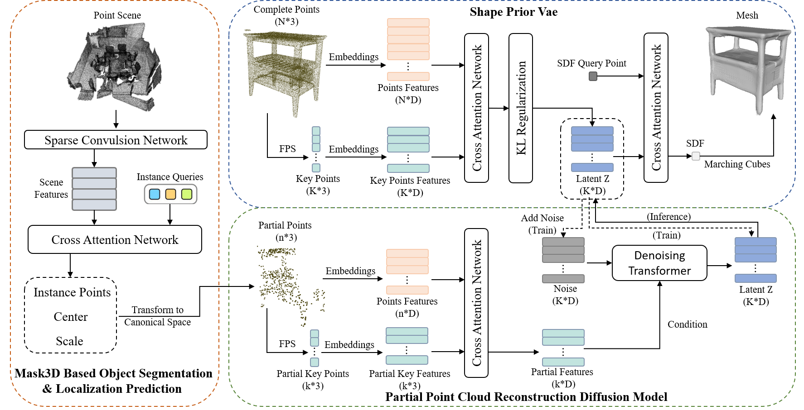

Instance-Level Object Reconstruction in Scenes based on Key-point Diffusion Model

Abstract
Semantic scene reconstruction based on point clouds is an important and challenging task in 3D scene understanding. This task requires not only identifying each instance in the point cloud scene but also reconstructing their geometric shapes based on partially observed point cloud data.
Compared to previous work, the algorithm of this work addresses issues such as the significant impact of predicted pose on reconstruction results, poor quality and insufficient quantity of supervised data during partial cloud reconstruction, unreasonable utilization of predicted partial point clouds, and limited expression ability of previous reconstruction methods.Furthermore, we address data quality issues by improving the acquisition and utilization of keypoint features. Moreover, we enhance the reconstruction quality of incomplete point clouds by incorporating keypoints into a diffusion model.
Method
The algorithm is mainly divided into three parts, namely three models.

The algorithm is mainly divided into three parts, namely three models.
"The Mask3D Based Object Segmentation & Localization Prediction" part requires segmenting the point cloud of the object from the scene point cloud and obtaining corresponding pose information. This section is modified based on the Mask3D segmentation model to predict the center and size of the object, but not the angle.
"Shape Prior Vae" embeds the shape of a 3D object into latent vectors, representing the object using latent vectors. At this step, data augmentation will be performed during training, where the orientation of the object is arbitrary, allowing the reconstruction method to handle input of point cloud objects with any orientation. We use keypoints and overall points to do cross attention, which makes it faster and more effective to obtain Key Points Features for future use.
"Partial Point Cloud Reconstruction Diffusion Model" requires training a key point diffusion model to complete and reconstruct the partial point clouds. During training, the scene point cloud segmentation detection model is used to obtain the partial point cloud and pose information of the instance, which is then transformed from the scene space to the regular space as input for the key point diffusion model.